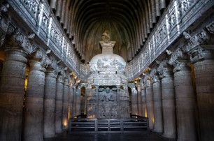
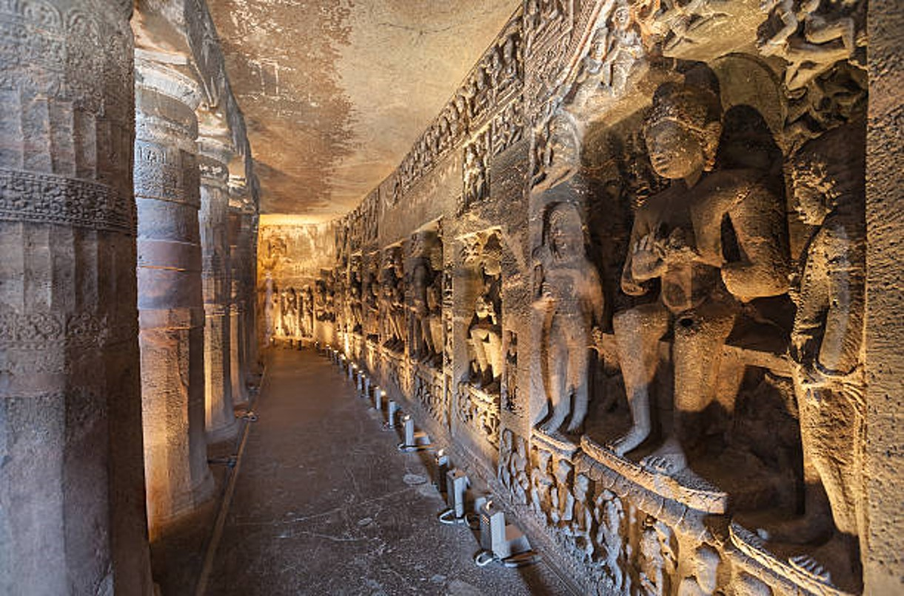
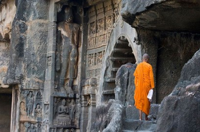

The Ajanta Caves are approximately 30 rock-cut Buddhist cave monuments dating from the 2nd century BCE to about 480 CE in the Aurangabad district of Maharashtra state in India. The caves include paintings and rock-cut sculptures described as among the finest surviving examples of ancient Indian art, particularly expressive paintings that present emotions through gesture, pose and form. The Ajanta Caves are generally agreed to have been made in two distinct phases, the first during the 2nd century BCE to 1st century CE, and a second several centuries later. The caves consist of 36 identifiable foundations, some of them discovered after the original numbering of the caves from 1 through 29. The later-identified caves have been suffixed with the letters of the alphabet, such as 15A, identified between originally numbered caves 15 and 16. The cave numbering is a convention of convenience, and does not reflect the chronological order of their construction.
Timing : 9:00 am – 5:00 pm, closed Monday


